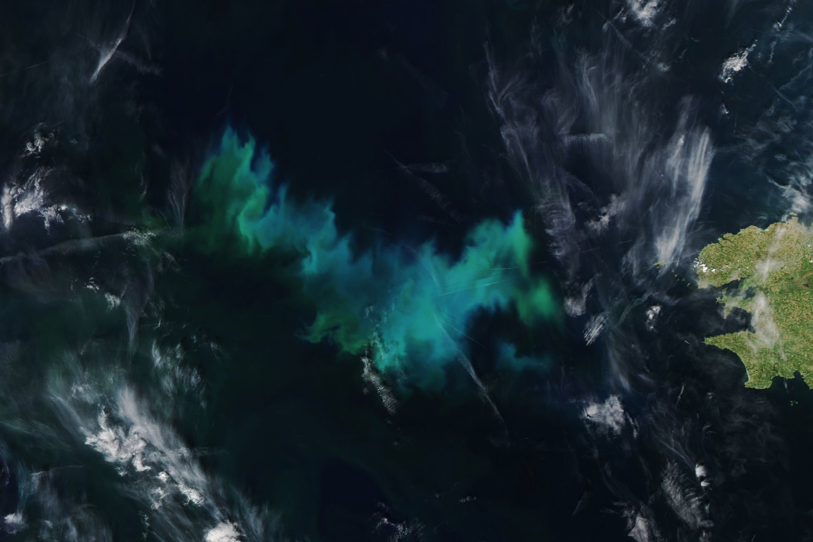
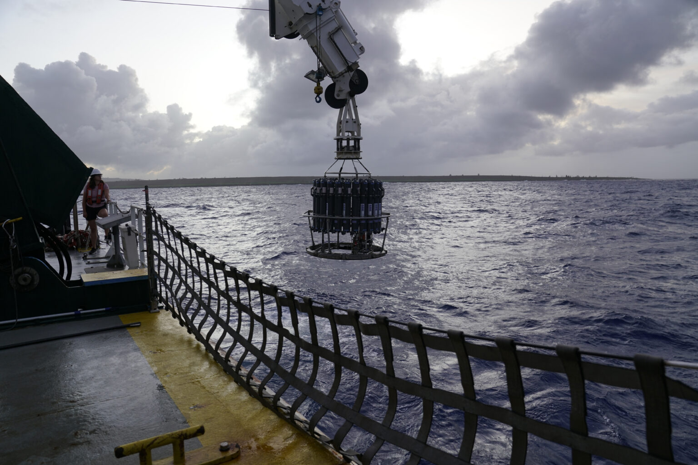
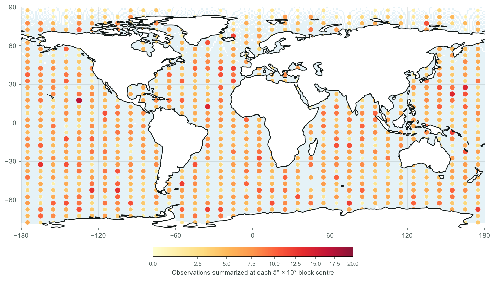
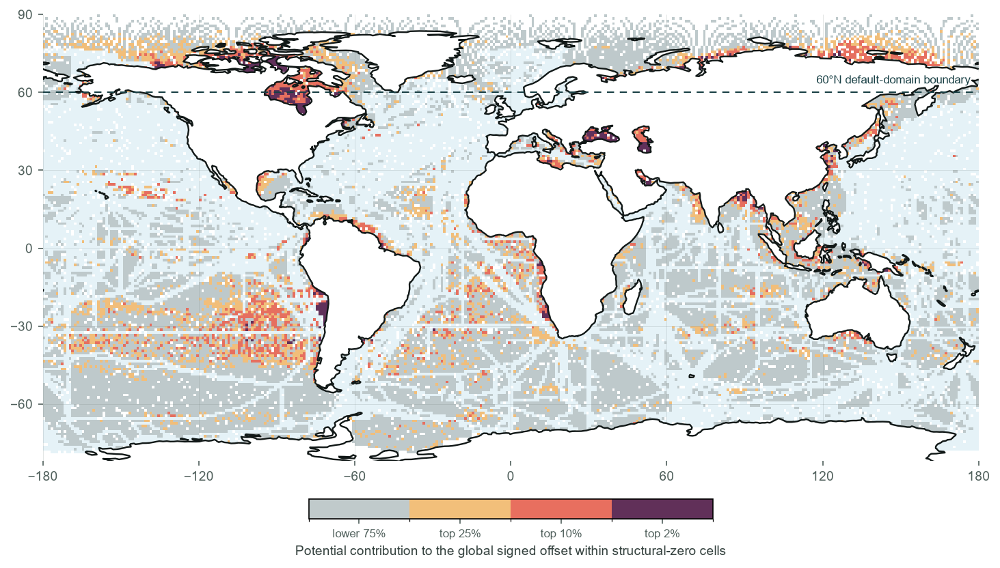

MAE
+2.466 +25.94% 3/3 worseScientific context · external imagery
Why does sampling geometry matter?
Ocean conditions vary sharply across space, while ship-based measurements are costly and geographically constrained. These reference images set the physical context for the controlled experiment below; neither image is used as model input or evidence.

Seen from orbit
Measured from shipsThe sampling plans
Where do 5,000 observations go—and where is risk left unresolved?
The first map shows the experimental input: how each rule allocates the same number of observations. It is a sampling map, not a performance map.
Design map · not model error

Random gives every candidate month-cell equal selection probability.
Reading the overlay: dots summarize observations at 5° × 10° block centres; shading follows the finer mapped grid. For historical-density, a block-centre dot can overlap a grey cell even though the selected observations lie in supported cells elsewhere in that block. Random and Coverage are not restricted to historical support. None of these rules simulates feasible ship routes.
1 · Change the allocation rule above
→
2 · Observe which ocean areas lose support
→
3 · Inspect where unsupported error affects the global offset
Supporting diagnostic · 2005
Where should a follow-up sampling experiment test first?
Colour appears only where the historical-density baseline assigns zero sampling probability. Darker cells combine a larger mean signed reconstruction error with a larger spherical area, so they contribute more to the global signed offset.
53.1%
of mapped ocean cells have zero historical support
49.2% by spherical area
49.2% by spherical area
Diagnostic, not a promise of improvement. This map identifies candidates for an add-observation experiment; it does not estimate the causal gain from sampling any one cell.
Outcome diagnostic · not marginal value

The core result · two different questions
A sampling penalty, with an explicit test boundary.
Both comparisons use 5,000 selected month-cells, spherical-area weighting, and candidates and evaluation below 60°N. Historical-density is compared with random under the same locked learner. The 23 September 2026 presentation revision repositions these existing results; it is not a new experiment or a newly preregistered protocol. Differences are calculated before rounding.
The primary test reserves about 20% of month-cells within each month before sampling, using one fixed set per year. It measures dispersed missing-cell reconstruction, not a full-field reconstruction after unrestricted sampling. The stress test instead excludes complete 20° × 10° blocks, with no buffer. Neither the three years nor the 15 year–fold units are independent ESM replicates; direction counts are not formal significance tests.
A self-correction · keep the estimand visible
Why did the signed offset shrink?
The number changes because weighting, evaluation domain and candidate support define different estimands—not because the underlying run was hidden.
Primary · hidden cells
Historical-density − random
Mean signed error difference
−0.835 µatm
RMSE
+4.224 +20.34% 3/3 worseBias direction
3/3 negative units Descriptive consistencyWhole-block stress-test history, not four independent confirmations. All four values are signed-bias differences in µatm.
Historical-density has higher MAE in the three hidden-cell year-level means. The magnitude depends on the learner and evaluation; no universal global bias is claimed.
Does it depend on sample size? · Supporting audit
The coverage result changes with sample count.
This panel is deliberately labelled as a non-default hidden-cell, full-domain, equal-cell audit. Δerror = coverage − random.
Supporting · hidden cells · full domain · equal-cell
Median absolute error
+0.670p99 absolute error
−4.720RMSE
−1.107Methods & evidence
Technical details, available—not in the way.
Open only the audit you want to inspect. None of these panels adds a new model fit.
Month balance1,800 deterministic selection audits
Regridding auditNative-cell weighting sensitivity
Replication & stress-test distributions3 primary units; 15 stress-test units
Primary: three year-level means, with one fixed hidden set per year and 20 paired seeds. Stress test: three years × five spatial folds, also with 20 paired seeds per unit. All share one ESM run. These are descriptive consistency units, not independent Earth-system replicates or formal significance tests.
Inspect the year-level and year–fold effects →Interpretability gateWhy SHAP is not shown as mechanism
Spatially grouped XGBoost models failed the prespecified out-of-fold generalization gate. SHAP artifacts were withheld because explaining a non-generalizing model would not establish a scientific driver.
Read the full interpretability-gate decision in the repository →
Four design boundariesIdealized observations; conditional results
- No observation error. Targets are monthly model-grid truth with no added measurement or point-to-grid representation error. SST and salinity come from the same simulation. Real-world errors and strategy rankings need not match.
- One fixed learner. HistGradientBoosting hyperparameters are locked across strategies and sample counts. The sample-count response reflects this learner as well as sampling geometry, not geometry alone.
- Limited predictors and one ESM. SST, salinity, latitude, cyclic longitude, year and cyclic month are used. MLD, chlorophyll and atmospheric CO₂ are not. No feature-ablation or cross-model claim is made.
- Separate yearly fits. All 12 months are fitted jointly within each selected year. This does not test continuous interannual reconstruction, trends or decadal carbon-sink variability.
Not yet supportedExplicit project boundary
Sea-ice-aware accessibility, cross-model robustness, buffered extrapolation, integrated-flux effects, cost-aware routing and direct real-ocean performance remain outside the present claim. Cross-learner and cross-ESM tests are needed before generalizing either the magnitude penalty or its signed bias. A full-field reconstruction after sampling from the complete candidate domain has not been run.
The complete method · plain-language version
How the experiment works.
Imagine choosing measurement locations in a virtual ocean where the true monthly CO₂ field is already known. We can hide that truth, sample only a few places, reconstruct the rest, and check exactly how much each sampling plan missed.
Ask one controlled question
If every plan receives exactly 5,000 observations, does changing where they are collected change reconstruction error?
Create a virtual ocean
Monthly surface-ocean pCO₂, temperature and salinity from IPSL-CM6A-LR form the known “truth” for 2005, 2010 and 2014. SOCAT is used only to describe historical sampling density—not to define the truth.
Simulate three sampling plans
Random samples candidates equally. Historical-density uses SOCAT density weights, not real cruise tracks. Coverage prioritizes sparse month–space blocks. The sample count stays fixed, so only the placement rule changes.
Hide places before training
First reserve scattered month-cells. Then sample from the remaining candidates, train the same gradient-boosting learner and predict the hidden cells. A separate stress test reserves whole blocks before sampling instead.
Make the comparison fair
Each test gives all plans the same evaluation cells and 20 paired seeds per year. The block stress test adds five folds. Both headline comparisons weight cells by spherical area and align sampling and evaluation below 60°N.
Measure, challenge, and limit the claim
MAE, RMSE, signed bias and tail errors describe different failure modes. Sample-count, month-balance, regridding and domain checks reveal which conclusions are stable—and which still require cross-model or real-ocean validation.
Same sample count→Different locations→
Same reconstruction model→Same held-out tests→
Compare what changes